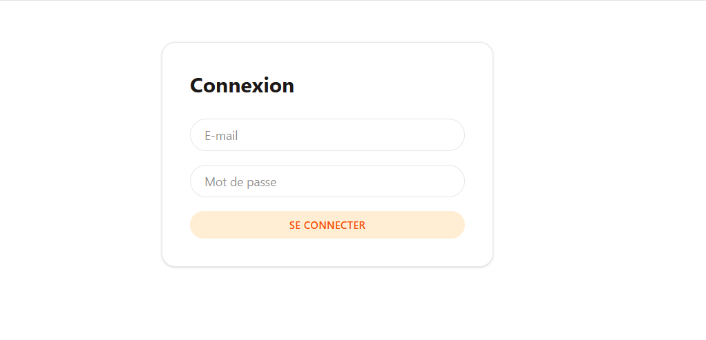
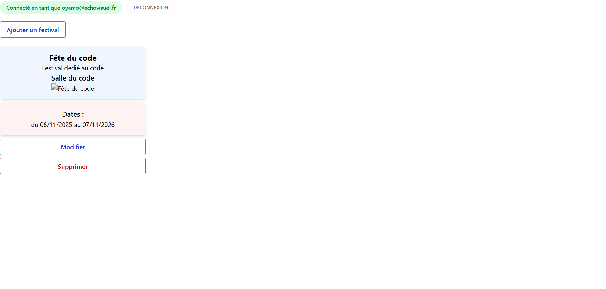

Présentation
EchoVisuel est une application web de gestion de festivals : programmation des concerts, gestion des artistes, des lieux, de la billetterie et des participants. Le projet a démarré en front avec des données simulées, puis j’ai conçu et développé l’API REST qui alimente toute l’application, dans un monorepo commun au front et au back.
Stack technique
- Back : Node.js, Express 5, TypeScript, Prisma 7, MariaDB
- Sécurité : JWT, bcrypt, cookies httpOnly, Joi, express-rate-limit, CORS
- Front : Angular 21 (composants standalone, signals), Tailwind CSS v4
- Outils : Thunder Client, Swagger (OpenAPI), Git/GitHub, Docker (en cours)
Couches de l'architecture
J’ai structuré l’API avec une responsabilité claire par couche, et appliqué ce même découpage aux six ressources du projet (artistes, lieux, billets, concerts, participants, festivals) :
- Router : associe chaque URL et méthode HTTP à son traitement
- Middlewares : vérifient l’existence de la ressource, valident les données entrantes et contrôlent l’authentification
- Controller : traduit la requête HTTP en appel métier et choisit le code de réponse
- Service : porte les règles métier
- Repository : seul point de contact avec la base via Prisma
- DTO : définissent ce qui entre dans l’API et ce qui en sort
Chaque ressource expose un CRUD complet et respecte les conventions REST (ressources au pluriel, bons verbes HTTP, codes 200, 201, 204, 400, 401, 404).
Modélisation et relations
J’ai modélisé la base avec Prisma et géré son évolution par migrations versionnées, pour que toute l’équipe partage le même schéma. Les entités sont reliées entre elles : un concert est rattaché à un artiste et à un lieu, un participant à un billet. Les réponses de l’API embarquent les données liées utiles au front (le nom de l’artiste et du lieu d’un concert, par exemple), en une seule requête.
Des règles métier côté serveur
La validation ne s’arrête pas au format des données. Le service applique de vraies règles métier :
- Programmation : l’heure de fin doit suivre l’heure de début, l’artiste et le lieu doivent exister, et un lieu ne peut pas accueillir deux concerts qui se chevauchent le même jour
- Participants : email unique, billet existant et disponible
- Festivals : cohérence entre les dates de début et de fin
Les modifications partielles (PATCH) sont vérifiées sur l’objet tel qu’il sera après modification, pour qu’aucune mise à jour ne contourne ces règles.
Authentification et sécurité
J’ai mis en place une authentification complète :
- Mots de passe hachés avec bcrypt, jamais stockés ni renvoyés en clair
- Token JWT signé avec une clé secrète et limité à deux heures
- Token transmis dans un cookie httpOnly, inaccessible au JavaScript de la page (protection contre le vol par XSS), avec l’option
sameSite: strictcontre les requêtes forgées depuis un autre site (CSRF) - Routes d’écriture protégées par un middleware dédié : les lectures restent publiques, toute création, modification ou suppression exige d’être connecté
- Messages d’erreur volontairement génériques à la connexion, pour ne pas révéler quels comptes existent
S’y ajoutent la validation systématique des entrées avec Joi, la limitation du nombre de requêtes, une configuration CORS restreinte au front et des secrets isolés dans des variables d’environnement.
Tests et documentation
J’ai testé chaque route avec Thunder Client, cas nominaux comme cas d’erreur (données invalides, ressource introuvable, conflit de créneau, accès non authentifié). L’API est documentée avec Swagger : une documentation interactive, accessible sur /api-docs, qui décrit toutes les routes, leurs données attendues et leurs réponses, et permet de les tester directement.
Intégration front
Côté Angular, j’ai remplacé les données simulées par des appels à l’API, avec des services fondés sur les signals. Les erreurs renvoyées par l’API (créneau déjà occupé, suppression non autorisée) sont affichées à l’utilisateur dans des modales, et un intercepteur HTTP gère l’envoi du cookie d’authentification sur toutes les requêtes.